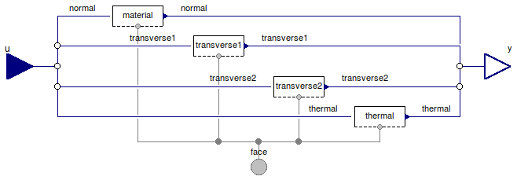

Table of Contents
- User's Guide
- Conditions
- Assemblies
- Regions
- Subregions
- Connectors
- Characteristics
- Units
- Quantities
- BaseClasses
Download
- Latest: FCSys-2.0.zip (**Please check back soon or contact kdavies4 at gmail.com.)

| Name | Description |
|---|---|
| Conditions for a Face connector | |
| Normal mechanical Conditions | |
| Transverse mechanical Conditions | |
| Thermal Conditions | |
| Base classes (not for direct use) |
 FCSys.Conditions.Face.Species
FCSys.Conditions.Face.Species
| Type | Name | Default | Description |
|---|---|---|---|
| CurrentAreic | normal | redeclare Normal.CurrentArei... | Normal condition |
| Velocity | transverse1 | redeclare Transverse.Velocit... | 1st transverse condition |
| Velocity | transverse2 | redeclare Transverse.Velocit... | 2nd transverse condition |
| Temperature | thermal | redeclare Thermal.Temperatur... | Thermal condition |
| Type | Name | Description |
|---|---|---|
| Face | face | Single-species connector for linear momentum and heat |
| RealInputBus | u | Input bus for values of imposed conditions |
| RealOutputBus | y | Output bus of measurements |
model Species "Conditions for a Face connector" extends FCSys.BaseClasses.Icons.Conditions.Single;replaceable Normal.CurrentAreic normal(source(k=0)) constrainedby Normal.BaseClasses.PartialCondition "Normal condition"; replaceable Transverse.Velocity transverse1(source(k=0),final orientation= Orientation.preceding) constrainedby Transverse.BaseClasses.PartialCondition "1st transverse condition"; replaceable Transverse.Velocity transverse2(source(k=0),final orientation= Orientation.following) constrainedby Transverse.BaseClasses.PartialCondition "2nd transverse condition"; replaceable Thermal.Temperature thermal(source(k=298.15*U.K)) constrainedby Thermal.BaseClasses.PartialCondition "Thermal condition"; // Note: In Dymola 7.4, the value of k must be specified here instead // of at the lower level (e.g., Thermal.Temperature) so that the source // subcomponent can be replaced by blocks that don't contain the // parameter k.FCSys.Connectors.Face face "Single-species connector for linear momentum and heat"; FCSys.Connectors.RealInputBus u "Input bus for values of imposed conditions"; FCSys.Connectors.RealOutputBus y "Output bus of measurements"; equation // Normalconnect(normal.face, face); connect(u.normal, normal.u); connect(normal.y, y.normal); // 1st transverseconnect(transverse1.face, face); connect(u.transverse1, transverse1.u); connect(transverse1.y, y.transverse1); // 2nd transverseconnect(transverse2.face, face); connect(u.transverse2, transverse2.u); connect(transverse2.y, y.transverse2); // Thermalconnect(thermal.face, face); connect(u.thermal, thermal.u); connect(thermal.y, y.thermal); end Species;